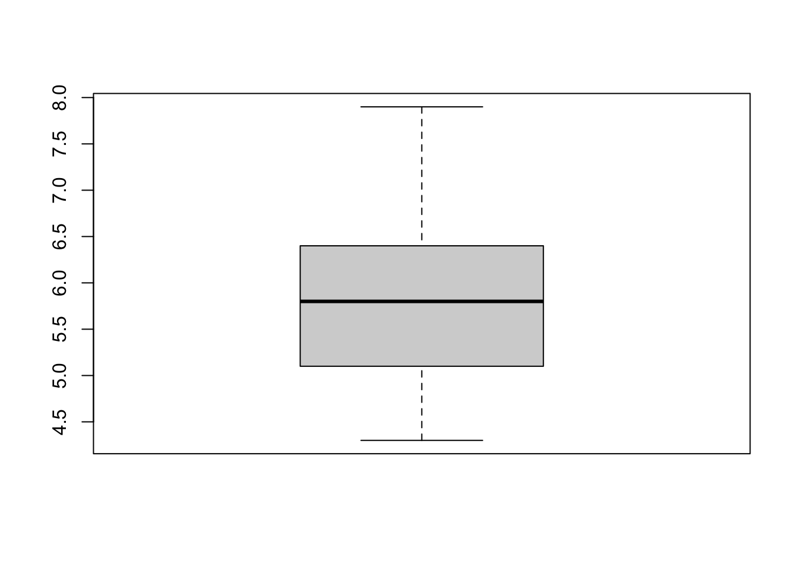

Function(data, options, moreOptions)Introduction
Learning Objectives
- What is R?
- Understand how to use functions in base R
- Understand R datatypes
What is R?
R is an extremely powerful programming language for working with data, applying statistics and creating publication ready graphics. In this lesson you will learn how to program in R and use the RStudio environment. We will cover the basics of the R syntax using its built in packages (base R), as well as importing data, creating simple graphics and running statistical tests.
Why is R useful?
It’s free!
It’s Powerful. There are many libraries for application specific tasks.
Bioconductor is a repository for bioinformatics R software.
Tidyverse packages for data science with a shared philosophy for storing, manipulating and visualising data.
Presentation quality graphics
- Save as a png, pdf or svg
Generate reproducible and persistent results
- R commands and analyses can be saved for reproducible and persistent analyses.
- Create automated scripts to replicate analysis on different datasets.
RStudio provides an interactive environment for working in R.
R markdown can generate documents to present your code, annotation and results in useful reports.
Shiny can produce interactive applications for exploratory data analysis.
R terms used in this workshop
Working directory
- This is the directory used to store your data and results.
- It is useful if it is also the directory where your input data is stored.
Data classes
- Values in R are assigned a class to help functions to interpret them. Some common classes are:
- numeric: Numbers
- character: Strings of text
- factor: Labels for categorical data (e.g. species, sex)
Vector
- A collection of values of one data type
- Equivalent to a column in a table
- Items in the vector can be named
Data Frame
- A table of values
- Essentially a collection of vectors as columns
- Columns can be different data types
- Columns must have the same size
Matrix
- A table where columns and rows are related
- Must all be the same data type
List
- Lists are collections of R objects
- Each item in the list has a unique index or name
- A list can contain items of different object types and classes (e.g single values, vectors, data frames, matrices, other lists…)
R Syntax
R is a functional programming language:
- Nearly every command is the name of a function followed by parentheses.
- The inputs to a function, including different options, are placed in the brackets.
- You can use the Tab key to see the options available or use the help documentation for each function.
Typical command structure:
Let’s run a function on a real data set. The cars data set is built into base R. We can look at it by typing its name.
cars speed dist
1 4 2
2 4 10
3 7 4
4 7 22
5 8 16
6 9 10
7 10 18
8 10 26
9 10 34
10 11 17
11 11 28
12 12 14
13 12 20
14 12 24
15 12 28
16 13 26
17 13 34
18 13 34
19 13 46
20 14 26
21 14 36
22 14 60
23 14 80
24 15 20
25 15 26
26 15 54
27 16 32
28 16 40
29 17 32
30 17 40
31 17 50
32 18 42
33 18 56
34 18 76
35 18 84
36 19 36
37 19 46
38 19 68
39 20 32
40 20 48
41 20 52
42 20 56
43 20 64
44 22 66
45 23 54
46 24 70
47 24 92
48 24 93
49 24 120
50 25 85We can see that this is a table of values. If we run the class function we will see that R recognises this as a data.frame.
class(cars)[1] "data.frame"Now let’s run a more useful function. The plot function in R is used for making basic graphs. Try plotting the speed column against the dist (stopping distance) column.
## Use the options within the plot function to customise the output
plot(cars, xlab="Car Speed (mph)", ylab="Stopping Distance (ft)")We can use the = sign or <- to store the output of a function as an object,
## These statements are identical
result = Function(data, options, moreOptions)
result <- Function(data, options, moreOptions)Try storing the output of the summary function on the cars data set. You will see the object sum_cars appear in your Environment tab.
sum_cars = summary(cars)To see what this object holds, just type its name.
sum_cars speed dist
Min. : 4.0 Min. : 2.00
1st Qu.:12.0 1st Qu.: 26.00
Median :15.0 Median : 36.00
Mean :15.4 Mean : 42.98
3rd Qu.:19.0 3rd Qu.: 56.00
Max. :25.0 Max. :120.00 Not all functions need arguments. For instance, the getwd which returns the path of your working directory.
getwd()If you want to change the working directory you can use setwd("/path/to/new_directory") or use the session menu in RStudio.
Help is also a function in R. The command below provides the help page for the function read.table
help(read.table)We can also search the help documentation using help.search. Let’s see if we can find a function for running a t-test.
help.search("t test")NOTE quotes are needed for strings (character text), they are not needed when referring to R data objects or function names.
There is a short cut for help, ?, which shows the help page for a function.
# same as help(read.table)
?read.table?? searches for help pages on functions, same as help.search(“phrase”)
# same as help.search("t test")
??"t test"Key points
- Data classes: Understand different data classes (numeric, character, factor)
- R objects: Understand different ways to structure data in R (vectors, dataframes, matrices, lists). There are several other types of R object.
- Functions: Code in R is run within functions.
- Help: Use the help features to find out how a function works.
R datatypes
It is possible to create a vector by typing data directly into R using the combine function c. Think of it as a concatenate or combine function.
x <- c(1,2,3,4,5)This creates a vector named ‘x’ which stores the numbers 1-5.
You can see what is in an object at any time by typing its name:
x[1] 1 2 3 4 5Character values needs to be quoted, otherwise R will look for a data object of that name.
daysofweek <- c("Monday", "Tuesday", "Wednesday", "Thursday", "Friday")You can create data frames from vectors using the data.frame function:
table <- data.frame(Index=x,Day=daysofweek)Usually, you will want to input data from a file. We will learn how to do this in the next section. You can read files on your computer or from a URL. R also has a few built-in datasets you can play with e.g. the iris dataset.
iris Sepal.Length Sepal.Width Petal.Length Petal.Width Species
1 5.1 3.5 1.4 0.2 setosa
2 4.9 3.0 1.4 0.2 setosa
3 4.7 3.2 1.3 0.2 setosa
4 4.6 3.1 1.5 0.2 setosa
5 5.0 3.6 1.4 0.2 setosa
6 5.4 3.9 1.7 0.4 setosa
7 4.6 3.4 1.4 0.3 setosa
8 5.0 3.4 1.5 0.2 setosa
9 4.4 2.9 1.4 0.2 setosa
10 4.9 3.1 1.5 0.1 setosa
11 5.4 3.7 1.5 0.2 setosa
12 4.8 3.4 1.6 0.2 setosa
13 4.8 3.0 1.4 0.1 setosa
14 4.3 3.0 1.1 0.1 setosa
15 5.8 4.0 1.2 0.2 setosa
16 5.7 4.4 1.5 0.4 setosa
17 5.4 3.9 1.3 0.4 setosa
18 5.1 3.5 1.4 0.3 setosa
19 5.7 3.8 1.7 0.3 setosa
20 5.1 3.8 1.5 0.3 setosa
21 5.4 3.4 1.7 0.2 setosa
22 5.1 3.7 1.5 0.4 setosa
23 4.6 3.6 1.0 0.2 setosa
24 5.1 3.3 1.7 0.5 setosa
25 4.8 3.4 1.9 0.2 setosa
26 5.0 3.0 1.6 0.2 setosa
27 5.0 3.4 1.6 0.4 setosa
28 5.2 3.5 1.5 0.2 setosa
29 5.2 3.4 1.4 0.2 setosa
30 4.7 3.2 1.6 0.2 setosa
31 4.8 3.1 1.6 0.2 setosa
32 5.4 3.4 1.5 0.4 setosa
33 5.2 4.1 1.5 0.1 setosa
34 5.5 4.2 1.4 0.2 setosa
35 4.9 3.1 1.5 0.2 setosa
36 5.0 3.2 1.2 0.2 setosa
37 5.5 3.5 1.3 0.2 setosa
38 4.9 3.6 1.4 0.1 setosa
39 4.4 3.0 1.3 0.2 setosa
40 5.1 3.4 1.5 0.2 setosa
41 5.0 3.5 1.3 0.3 setosa
42 4.5 2.3 1.3 0.3 setosa
43 4.4 3.2 1.3 0.2 setosa
44 5.0 3.5 1.6 0.6 setosa
45 5.1 3.8 1.9 0.4 setosa
46 4.8 3.0 1.4 0.3 setosa
47 5.1 3.8 1.6 0.2 setosa
48 4.6 3.2 1.4 0.2 setosa
49 5.3 3.7 1.5 0.2 setosa
50 5.0 3.3 1.4 0.2 setosa
51 7.0 3.2 4.7 1.4 versicolor
52 6.4 3.2 4.5 1.5 versicolor
53 6.9 3.1 4.9 1.5 versicolor
54 5.5 2.3 4.0 1.3 versicolor
55 6.5 2.8 4.6 1.5 versicolor
56 5.7 2.8 4.5 1.3 versicolor
57 6.3 3.3 4.7 1.6 versicolor
58 4.9 2.4 3.3 1.0 versicolor
59 6.6 2.9 4.6 1.3 versicolor
60 5.2 2.7 3.9 1.4 versicolor
61 5.0 2.0 3.5 1.0 versicolor
62 5.9 3.0 4.2 1.5 versicolor
63 6.0 2.2 4.0 1.0 versicolor
64 6.1 2.9 4.7 1.4 versicolor
65 5.6 2.9 3.6 1.3 versicolor
66 6.7 3.1 4.4 1.4 versicolor
67 5.6 3.0 4.5 1.5 versicolor
68 5.8 2.7 4.1 1.0 versicolor
69 6.2 2.2 4.5 1.5 versicolor
70 5.6 2.5 3.9 1.1 versicolor
71 5.9 3.2 4.8 1.8 versicolor
72 6.1 2.8 4.0 1.3 versicolor
73 6.3 2.5 4.9 1.5 versicolor
74 6.1 2.8 4.7 1.2 versicolor
75 6.4 2.9 4.3 1.3 versicolor
76 6.6 3.0 4.4 1.4 versicolor
77 6.8 2.8 4.8 1.4 versicolor
78 6.7 3.0 5.0 1.7 versicolor
79 6.0 2.9 4.5 1.5 versicolor
80 5.7 2.6 3.5 1.0 versicolor
81 5.5 2.4 3.8 1.1 versicolor
82 5.5 2.4 3.7 1.0 versicolor
83 5.8 2.7 3.9 1.2 versicolor
84 6.0 2.7 5.1 1.6 versicolor
85 5.4 3.0 4.5 1.5 versicolor
86 6.0 3.4 4.5 1.6 versicolor
87 6.7 3.1 4.7 1.5 versicolor
88 6.3 2.3 4.4 1.3 versicolor
89 5.6 3.0 4.1 1.3 versicolor
90 5.5 2.5 4.0 1.3 versicolor
91 5.5 2.6 4.4 1.2 versicolor
92 6.1 3.0 4.6 1.4 versicolor
93 5.8 2.6 4.0 1.2 versicolor
94 5.0 2.3 3.3 1.0 versicolor
95 5.6 2.7 4.2 1.3 versicolor
96 5.7 3.0 4.2 1.2 versicolor
97 5.7 2.9 4.2 1.3 versicolor
98 6.2 2.9 4.3 1.3 versicolor
99 5.1 2.5 3.0 1.1 versicolor
100 5.7 2.8 4.1 1.3 versicolor
101 6.3 3.3 6.0 2.5 virginica
102 5.8 2.7 5.1 1.9 virginica
103 7.1 3.0 5.9 2.1 virginica
104 6.3 2.9 5.6 1.8 virginica
105 6.5 3.0 5.8 2.2 virginica
106 7.6 3.0 6.6 2.1 virginica
107 4.9 2.5 4.5 1.7 virginica
108 7.3 2.9 6.3 1.8 virginica
109 6.7 2.5 5.8 1.8 virginica
110 7.2 3.6 6.1 2.5 virginica
111 6.5 3.2 5.1 2.0 virginica
112 6.4 2.7 5.3 1.9 virginica
113 6.8 3.0 5.5 2.1 virginica
114 5.7 2.5 5.0 2.0 virginica
115 5.8 2.8 5.1 2.4 virginica
116 6.4 3.2 5.3 2.3 virginica
117 6.5 3.0 5.5 1.8 virginica
118 7.7 3.8 6.7 2.2 virginica
119 7.7 2.6 6.9 2.3 virginica
120 6.0 2.2 5.0 1.5 virginica
121 6.9 3.2 5.7 2.3 virginica
122 5.6 2.8 4.9 2.0 virginica
123 7.7 2.8 6.7 2.0 virginica
124 6.3 2.7 4.9 1.8 virginica
125 6.7 3.3 5.7 2.1 virginica
126 7.2 3.2 6.0 1.8 virginica
127 6.2 2.8 4.8 1.8 virginica
128 6.1 3.0 4.9 1.8 virginica
129 6.4 2.8 5.6 2.1 virginica
130 7.2 3.0 5.8 1.6 virginica
131 7.4 2.8 6.1 1.9 virginica
132 7.9 3.8 6.4 2.0 virginica
133 6.4 2.8 5.6 2.2 virginica
134 6.3 2.8 5.1 1.5 virginica
135 6.1 2.6 5.6 1.4 virginica
136 7.7 3.0 6.1 2.3 virginica
137 6.3 3.4 5.6 2.4 virginica
138 6.4 3.1 5.5 1.8 virginica
139 6.0 3.0 4.8 1.8 virginica
140 6.9 3.1 5.4 2.1 virginica
141 6.7 3.1 5.6 2.4 virginica
142 6.9 3.1 5.1 2.3 virginica
143 5.8 2.7 5.1 1.9 virginica
144 6.8 3.2 5.9 2.3 virginica
145 6.7 3.3 5.7 2.5 virginica
146 6.7 3.0 5.2 2.3 virginica
147 6.3 2.5 5.0 1.9 virginica
148 6.5 3.0 5.2 2.0 virginica
149 6.2 3.4 5.4 2.3 virginica
150 5.9 3.0 5.1 1.8 virginicaR stores table as a data frame, containing multiple vectors.
class(iris)[1] "data.frame"We can look at a datafram by typing its name, but this prints a lot of rows. Using the head() function will only print the first few lines;
head(iris, n=5) Sepal.Length Sepal.Width Petal.Length Petal.Width Species
1 5.1 3.5 1.4 0.2 setosa
2 4.9 3.0 1.4 0.2 setosa
3 4.7 3.2 1.3 0.2 setosa
4 4.6 3.1 1.5 0.2 setosa
5 5.0 3.6 1.4 0.2 setosaYou can also use the View() command to open data frames in the file pane.
You can also print individual columns of a dataframe using the $ notation.
head(iris$Sepal.Length, n=5)[1] 5.1 4.9 4.7 4.6 5.0Inspecting a dataset
Let’s use some simple functions to inspect and summarise our data.
summary(iris) # Summary of the whole data frame Sepal.Length Sepal.Width Petal.Length Petal.Width
Min. :4.300 Min. :2.000 Min. :1.000 Min. :0.100
1st Qu.:5.100 1st Qu.:2.800 1st Qu.:1.600 1st Qu.:0.300
Median :5.800 Median :3.000 Median :4.350 Median :1.300
Mean :5.843 Mean :3.057 Mean :3.758 Mean :1.199
3rd Qu.:6.400 3rd Qu.:3.300 3rd Qu.:5.100 3rd Qu.:1.800
Max. :7.900 Max. :4.400 Max. :6.900 Max. :2.500
Species
setosa :50
versicolor:50
virginica :50
summary(iris$Sepal.Width) # Summary information for column A Min. 1st Qu. Median Mean 3rd Qu. Max.
2.000 2.800 3.000 3.057 3.300 4.400 mean(iris$Petal.Length) [1] 3.758Try some other functions like mean, median, min and max.
order(iris$Petal.Width) # The order function sorts a vector. [1] 10 13 14 33 38 1 2 3 4 5 8 9 11 12 15 21 23 25
[19] 26 28 29 30 31 34 35 36 37 39 40 43 47 48 49 50 7 18
[37] 19 20 41 42 46 6 16 17 22 27 32 45 24 44 58 61 63 68
[55] 80 82 94 70 81 99 74 83 91 93 96 54 56 59 65 72 75 88
[73] 89 90 95 97 98 100 51 60 64 66 76 77 92 135 52 53 55 62
[91] 67 69 73 79 85 87 120 134 57 84 86 130 78 107 71 104 108 109
[109] 117 124 126 127 128 138 139 150 102 112 131 143 147 111 114 122 123 132
[127] 148 103 106 113 125 129 140 105 118 133 116 119 121 136 142 144 146 149
[145] 115 137 141 101 110 145We can access specific rows, columns and cells within a table using square brackets: TABLE[ROW,COLUMN]. Try the following commands.
##Print the value in the first column of the first row
iris[1,1]
##Use blanks to print an entire row or column
iris[2,]
iris[,3]
##You can select multiple rows and columns with ranges (:) or the c() function
iris[1:5,c(3,5)]
##You can also use row or column names
iris[,"Species"]
##You can select rows or columns based on criteria (subsetting).
iris[iris$Petal.Width>50,]Plotting with R
Base R has some basic plotting functions but we will learn to use the ggplot2 library for high quality graphics.
It can useful to know the options available in “base” R to quickly view your data.
Histograms
The ChickWeight data set is another data frame built into R. Using this larger set of data we can modify the number of vertical columns in a histogram with the option breaks.
hist(ChickWeight$weight, breaks=5)
hist(ChickWeight$weight, breaks=50)
Boxplots
boxplot(iris$Sepal.Length)
Scatter plots
plot(iris$Sepal.Length,iris$Sepal.Width)
Statistical testing
R has many functions for statistical testing.
In the example below we will create a dataframe which contains the weights of 10 rabbits before and after some form of treatment.
We then want to ask if the treatment has a significant effect on the weight of the rabbits. We can use a paired t-test to do this.
# The data set
# Weight of the rabbit before treatment
before <-c(190.1, 190.9, 172.7, 213, 231.4,
196.9, 172.2, 285.5, 225.2, 113.7)
# Weight of the rabbit after treatment
after <-c(392.9, 313.2, 345.1, 393, 434,
227.9, 422, 383.9, 392.3, 298)
# Create a data frame
rabbits <- data.frame(
sample=c(1:10), ##Assign sampleIDs
before=before,
after=after
)
# Plot the differences in weights
boxplot(rabbits$after - rabbits$before)# Use a paired t-test to see if differences in weight are statistically significant
t.test(rabbits$after,rabbits$before,paired = T,alternative = "two.sided")
Paired t-test
data: rabbits$after and rabbits$before
t = 8.197, df = 9, p-value = 1.822e-05
alternative hypothesis: true mean difference is not equal to 0
95 percent confidence interval:
116.6188 205.5212
sample estimates:
mean difference
161.07 Further Learning
Further examples of statistical testing in R are available on the sthda website.
The rstatix package is useful for applying statistical tests on tables of data and is compatible with the Tidy data structures and pipes that we will learn later on in these lessons.
Key points
- R is a functional programming language
- RStudio is an interactive environment for programming in R
- Base R functions can be used to import, manipulate and plot data
- There are many functions for statistical analysis in R